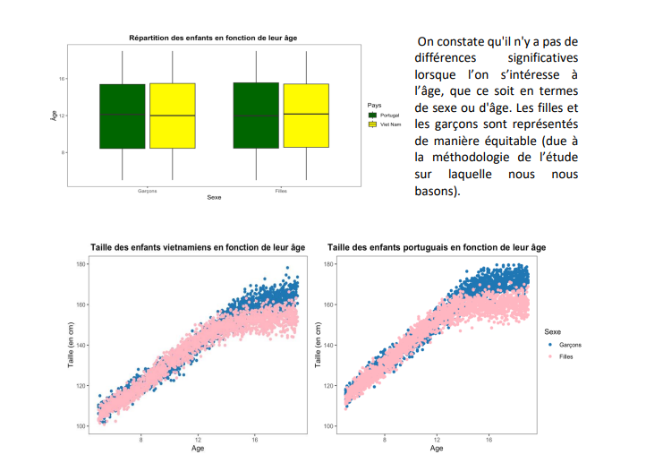

Description
Dans le cadre d'une SAE, nous avons du travaillé avec des données afin de les traiter et comprendre leur relation.
Étapes
Voici les étapes principales que nous avons suivies :
- Collecte des données : Importation des données à partir d'une source réelle.
- Nettoyage des données : Suppression des valeurs manquantes ou erronées.
- Analyse exploratoire : Calcul de statistiques descriptives et visualisation des données.
- Régression linéaire : Modélisation de la relation entre les variables.
- Interprétation des résultats : Analyse des coefficients et des graphiques.
Outils utilisés
| Catégorie | Outil | Description |
|---|---|---|
| Traitement | dplyr, tidyverse, readxl | Manipulation et traitement des données. |
| Visualisation | ggplot | Création de graphiques et de visualisations. |
| Outil complémentaire | Excel | Préparation et observation des données. |
Résultats
Le résultat final de notre analyse est présenté ci-dessous :
On s'attend à ce qu'on sache interpréter ce genre de visualisation, il faut comprendre ce que ça signifie et qu'est ce qu'on cherche à montrer. On va nous le demander et le mettre en forme.